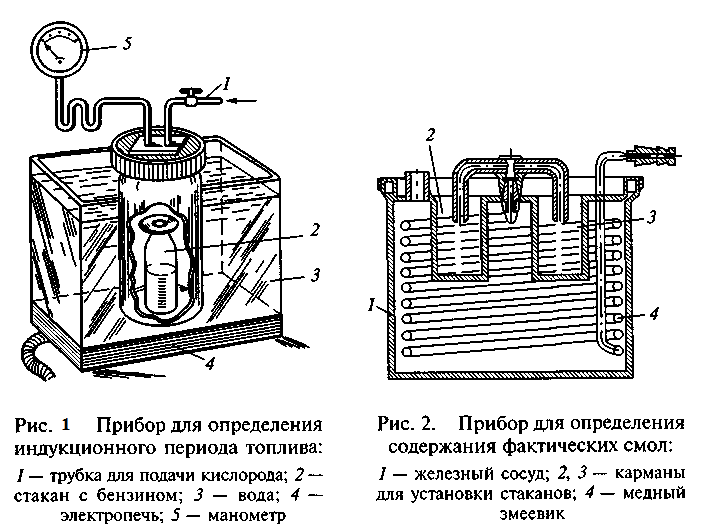
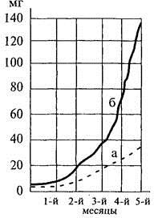
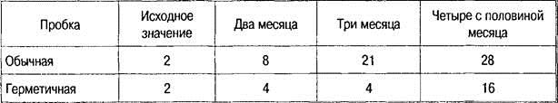
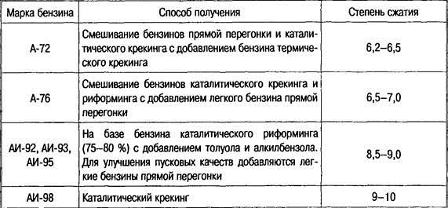
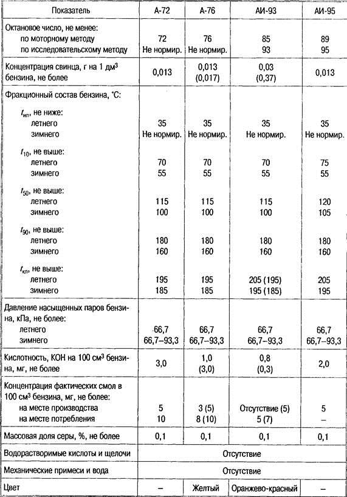
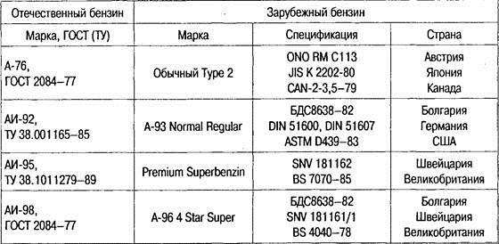

Тема 3
Коррозионные свойства
бензинов. Марки бензинов и их применение
Стабильность бензинов
Физическая стабильность
Наиболее глубокие изменения свойств
бензина возможны в результате двух физических процессов: нарушения однородности
бензина вследствие выпадения кристаллов высокоплавких углеводородов и
испарения его легких фракций.
Кристаллизация углеводородов в
стандартных отечественных автомобильных бензинах происходит при очень низких
температурах (ниже — 60 °С), поэтому при их использовании возможна эксплуатация
автомобилей в суровых зимних условиях без нарушения работы двигателей и систем
питания.
При транспортировке и хранении бензина
происходит испарение легких фракций, ухудшающее пусковые свойства бензина.
Потери от испарения влияют на начальные точки разгонки бензина, его октановое
число и особенно сильно на давление насыщенных паров, которое при испарении
3...4% бензина может снизиться в 2...2,5 раза.
Химическая стабильность
Изменение свойств бензина может
произойти и вследствие химических превращений его компонентов и в первую
очередь в результате окисления непредельных углеводородов, образующих смолы при
длительном хранении бензина. По мере испарения бензина смолы оседают на деталях
карбюратора и впускной системы двигателя. В небольших количествах они также
проникают и в камеру сгорания, где вместе с несгоревшим топливом и маслом
образуют нагар, оказывающий вредное влияние на работу двигателя.
Склонность топлив к окислению и
смолообразованию при их длительном хранении характеризуется индукционным
периодом — временем (выраженным в минутах), в течение которого испытуемый
бензин в среде чистого кислорода под давлением 0,7 МПа и при температуре 100 °С
практически не подвергается окислению. Чем больше индукционный период, тем
стабильнее бензин и тем дольше его можно хранить (от 6 мес. до 6 лет в
зависимости от климатических условий и тары, в которой он хранится). Индукционный
период обычных отечественных бензинов составляет 600...900 мин, а бензинов со
знаком качества — 1200 мин.
Прибор для определения индукционного
периода топлива представлен на рисунке 1

Степень осмоления бензинов определяется
содержанием в них фактических смол, т.е. всех смолообразующих продуктов, остающихся
в стеклянном стакане после полного испарения из него в струе воздуха 25 мл
испытуемого бензина.
ГОСТами нормируется содержание в бензине
фактических смол и на месте его производства, и на месте потребления. Прибор
для определения содержания фактических смол показан на рис. 2.
В качестве присадок к автомобильным
бензинам, препятствующих их осмолению, используют древесно-смольный антиокислитель
в количестве 0,050...0,015 % и антиокислитель ФЧ -16 в количестве
0,03...0,10%.
Изменение физической стабильности
возможно в результате кристаллизации высокоплавких углеводородов при низких
температурах, а также испарения легких фракций при высоких температурах. В
результате изменяется состав (обедняется легкими фракциями), что затрудняет
пуск двигателя.
Потеря легких фракций сильно влияет на
давление насыщенных паров.
Химическая стабильность — сохранение
химических свойств вещества в процессе хранения и транспортировки, так как со
временем в бензинах происходят процессы окисления, уплотнения и разложения.
Такие свойства бензинов, как окисление и смолообразование при длительном хранении,
характеризуются параметром индукционного периода.
Индукционный период — время, в течение
которого бензин, находящийся в контакте с воздухом под давлением 0,7 МПа при
температуре 100 °С, практически не окисляется. Чем выше индукционный период
бензина, тем выше его химическая стабильность.
Степень осмоления определяется
содержанием в бензине фактических смол. Этот показатель определяется в
специальном приборе путем испарения навески бензина (100 мл) в струе нагретого
воздуха и взвешивания остатка после испарения.

Рис. 3. Смолообразование при хранении
100 мл бензина в емкости, заполненной полностью (а) и на 50 % (б)
Смолы, образующие липкие остатки, отлагаются
на таких деталях, как топливный бак, топливопроводы, насос, карбюратор, стержни
впускных клапанов. Смолы, осевшие на горячих деталях, образуют твердые
отложения, а попавшие в камеру сгорания, вызывают образование нагара.
Увеличение площади контакта топлива с
воздухом при хранении ускоряет окислительные процессы (рис. 3). Поэтому при
хранении целесообразно заполнять емкости до горловины.
Воздушное пространство над топливом
после реакции с парами топлива наполняется азотом и процесс окисления
замедляется. Поступление свежего воздуха снова вызовет интенсивное протекание
окислительных процессов. Поэтому хранить бензин необходимо в герметично
закрытых емкостях (табл. 1.3).
Процессы окисления и осмоления
ускоряются с повышением температуры бензина. Процесс окисления
самоускоряющийся, поэтому бензин, залитый в емкость, не очищенную от остатков
старого бензина, осмоляется быстрее. Ускоряют образование смол ржавчина и
грязь.
Таблица 1. Содержания смол в 100 мл
бензина при различной продолжительности хранения его в баке автомобиля ЗИЛ-130
в зависимости от герметичности пробки, мг

Коррозионные свойства
бензинов
Наибольшую опасность с точки зрения
коррозионного воздействия представляют: вода, водорастворимые кислоты и щелочи,
а также сернистые соединения.
Водорастворимые
кислоты и щелочи
Водорастворимые кислоты и щелочи
являются электролитами. Их капельки осаждаются на поверхности металла и
вызывают электрохимическую коррозию. Продукты коррозии переходят в топливо и
засоряют фильтры и другую топливную аппаратуру.
Неорганические кислоты и щелочи —
примеси, которые могут попасть в топливо при его очистке. Так, например, при
производстве бензина для удаления органических кислот его очищают раствором
щелочи, затем промывают водой. При недостаточно эффективной обработке в бензине
могут оставаться щелочь и вода.
Особенно вредными для топлива являются
минеральные соли и кислоты. Их присутствие в топливе не допускается. Проверка
бензинов и дизельных топлив на содержание минеральных кислот и щелочей носит
качественный характер, для чего топливо проверяют водной вытяжкой.
Нафтеновые
(органические) кислоты
Органические кислоты, содержащиеся в
нефти, при переработке попадают в бензины и дизельное топливо.
Нафтеновые кислоты — слабые электролиты,
которые обладают невысокой коррозионной активностью, что позволяет не удалять
их из нефтепродуктов. Кроме того, они оказывают благоприятное смазывающее
воздействие. Содержание органических кислот в топливе определяется кислотным
числом, которое выражается количеством гидроксида калия (КОН), необходимым для
нейтрализации органических кислот, находящихся в 100 мл топлива; измеряется в
мг. Кислотное число для бензинов не должно быть более 3 мг КОН на 100 мл
топлива; для дизельных топлив — не более 5 мг КОН на 100 мл топлива.
Сернистые соединения
В топливах различают активные и
неактивные сернистые соединения. Активные соединения взаимодействуют с
металлами при комнатной температуре. К ним относятся сероводород, меркаптаны,
элементарная сера. Они вызывают коррозию металлов и их содержание в бензинах не
должно превышать более 0,0015 %. Наличие активных сернистых соединений
определяют качественным методом — испытанием на медную пластинку. Если цвет пластинки
после ее нахождения в бензине при температуре 50 °С в течение 3 ч стал черным,
черно-коричневым или серо-стальным, значит топливо не выдержало испытания. При
всех других изменениях цвета содержание активных сернистых соединений не
превышает допустимых норм.
Неактивные сернистые соединения
(сульфиды, дисульфиды) при обычных условиях практически не взаимодействуют с
металлами. Однако при высокой температуре (во время сгорания) они образуют
сернистый газ, который с металлами вступает в реакцию.
ГОСТ допускает содержание неактивных
сернистых соединений в следующих количествах:
для бензина А-72 — не более 0,12 %;
для бензинов А-76, АИ-93, АИ-98 — не
более 0,1%;
для бензина АИ-95 — не более 0,02 %.
Наличие неактивных сернистых соединений
в бензинах определяют по содержанию элементарной серы после сжигания образца.
Современные автомобильные бензины, как
правило, готовят смешиванием нескольких компонентов. Это позволяет получать
бензин с заданными показателями качества при рациональном использовании свойств
каждого компонента.
Основными показателями, определяющими
компонентный состав бензинов, являются детонационная стойкость и фракционный
состав. Качество автомобильных бензинов регламентируется ГОСТами.
По наличию антидетонаторов бензины
делятся на этилированные и неэтилированные. Каждая марка бензина кроме АИ-95 и
АИ-98 имеет летнюю и зимнюю модификации. Разница в температурах перегонки
модификаций составляет 10—20 С, причем для всех марок бензина температура
испарения одноименных фракций одинакова.
Состав бензина и другие его показатели
зависят от месторождений нефти и технологии ее производства.
Маркировка бензинов состоит из буквы А
(для автомобильных бензинов), а также цифр, соответствующих минимальному
октановому числу, определенному по моторному или исследовательскому методу.
Бензины различных марок получают разными
способами, и каждая марка предназначена для двигателей с определенной степенью
сжатия (табл. 2).
Таблица 2.Способы получения и назначение
автомобильных бензинов

Основные показатели бензинов по ГОСТ
2084—77 приведены в табл. 3.

В скобках указаны значения для
этилированных бензинов.
В настоящее время в стране действуют ТУ
38001165—97 на бензины для автомобильного транспорта, которые кроме указанных в
табл. 3 включают неэтилированные бензины АИ-80, АИ-91 и АИ-96. Бензин АИ-91
предусмотрен вместо бензина АИ-93.
В целях экономии расходов на бензин и
прочие горюче-смазочные материалы, различными компаниями
используется мониторинг транспортных средств. Подробнее о таких системах
читайте в статье GPS мониторинг транспорта.
Снижение октанового числа на две единицы
дало возможность из того же количества сырья получить бензина на 3—5 % больше.
На неэтилированные бензины с января 1999
г. действует ГОСТ Р51105—97, который предусматривает четыре марки бензина:
Normal-80, Regular-91, Premium-95 и Super-98. Первый из них заменит бензины
А-76 и АИ-80 из-за ужесточения экологических требований: содержание
тетраэтилсвинца не более 0,01 г на 1 л топлива, запрещено использование
железосодержащих антидетонаторов; содержание марганца не более 0,5 г на 1 л
топлива для бензина Normal-80 и 0,18 г для бензина Regular-91. Для сравнения:
по старому ГОСТу для неэтилированных бензинов допускалось содержание
тетраэтилсвинца от 0,013 до 0,017 г на 1 л бензина, железа — 0,37 г, марганца —
0,5 г.
Применение неэтилированных бензинов
является радикальной мерой по снижению токсичности отработавших газов и
сохранению чистоты окружающей среды. Однако только этого способа недостаточно
для того, чтобы добиться данной цели. Необходимо также использовать автомобили
с исправными системами питания и зажигания двигателей, обеспечивая тем самым
максимально возможную полноту сгорания топлива.
Таблица 4. Взаимозаменяемость бензинов

Отечественный бензин АИ-95 по качеству
приближается к применяемому за рубежом бензину Premium с октановым числом
97—98. В странах Европейского экономического сообщества (ЕЭС) доля бензинов
Premium составляет примерно 78 %, а бензинов Regular — 22 %. Так как
отечественный бензин АИ-93 не соответствует ни бензину Premium, ни бензину
Regular, то на экспорт поставляется бензин АИ-92.
Страны ЕЭС решением от 20.03.1985 г.
утвердили единый неэтилированный бензин Premium с октановым числом 95,
установленным исследовательским методом. Октановое число бензинов Regular
91—92.
Контрольные вопросы по темам
«Автомобильные бензины»
1. Какие предъявляются требования к
качеству бензина?
2. Какие свойства и показатели бензина
влияют на смесеобразование?
3. Что такое нормальное, детонационное и
калильное сгорание?
4. Что такое детонационная стойкость
бензинов и какие существуют методы определения октанового числа?
5. Расскажите о способах повышения
детонационной стойкости бензинов.
6. Расскажите о способности бензина
образовывать отложения.
7. Расскажите о коррозионных свойствах
бензина.
8. Как маркируются бензины?
P.S.
По
составу автомобильные бензины представляют собой смесь компонентов, получаемых
в результате различных технологических процессов: прямой перегонки нефти,
каталитического риформинга, каталитического крекинга и гидрокрекинга вакуумного
газойля, изомеризации прямогонных фракций, алкилирования, ароматизации
термического крекинга, висбрекинга, замедленного коксования. Компонентный
состав бензина зависит, в основном, от его марки и определяется набором
технологических установок на нефтеперерабатывающем заводе.
Базовым
компонентом для выработки автомобильных бензинов являются обычно бензины
каталитического риформинга или каталитического крекинга. Бензины
каталитического риформинга характеризуются низким содержанием серы, в их
составе практически отсутствуют олефины, поэтому они высокостабильны при
хранении. Однако повышенное содержание в них ароматических углеводородов с
экологической точки зрения является лимитирующим фактором. К их недостаткам
также относится неравномерность распределения детонационной стойкости по
фракциям. В составе бензинового фонда России доля компонента каталитического
риформинга превышает 50 %.
Бензины
каталитического крекинга характеризуются низкой массовой долей серы, октановыми
числами по исследовательскому методу 90–93 единицы. Содержание в них
ароматических углеводородов составляет 30–40 %, олефиновых — 25–35 %. В их
составе практически отсутствуют диеновые углеводороды, поэтому они обладают
относительно высокой химической стабильностью (индукционный период 800–900
мин.). По сравнению с бензинами каталитического риформинга для бензинов
каталитического крекинга характерно более равномерное распределение
детонационной стойкости по фракциям. Поэтому в качестве базы для производства
автомобильных бензинов целесообразно использовать смесь компонентов
каталитического риформинга и каталитического крекинга.
Бензины
таких термических процессов, как крекинг, замедленное коксование имеют низкую
детонационную стойкость и химическую стабильность, высокое содержание серы и
используются только для получения низкооктановых бензинов в ограниченных
количествах.
При производстве высокооктановых
бензинов используются алкилбензин, изооктан, изопентан и толуол. Бензины АИ-95
и АИ-98 обычно получают с добавлением кислородсодержащих компонентов:
метил-трет-бутилового эфира (МТБЭ) или его смеси с трет-бутанолом, получившей
название фэтерол. Введение МТБЭ в бензин позволяет повысить полноту его
сгорания и равномерность распределения детонационной стойкости по фракциям.
Максимально допустимая концентрация МТБЭ в бензинах составляет 15 % из-за его
относительно низкой теплоты сгорания и высокой агрессивности по отношению к
резинам.
Для
достижения требуемого уровня детонационных свойств этилированных бензинов к ним
добавляют этиловую жидкость (до 0,15 г свинца/дм3 бензина). К бензинам
вторичных процессов, содержащим непредельные углеводороды, для их стабилизации
и обеспечения требований по индукционному периоду разрешается добавлять
антиокислители Агидол-1 или Агидол-12. В целях обеспечения безопасности в
обращении и маркировки этилированные бензины должны быть окрашены. Бензин АИ-80
окрашивается в желтый цвет жирорастворимым желтым красителем К, бензин АИ-91 —
в оранжево-красный цвет жирорастворимым темно-красным красителем Ж.
Этилированные бензины, предназначенные для экспорта, не окрашиваются.